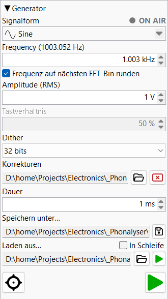

Diese Seite beschreibt die Bedienelemente des Generators. Wie er intern Signale synthetisiert — direkte digitale Synthese, die Wellenformkerne, Sweeps und aktive Verzerrungskompensation — ist unter Funktionsprinzip ▸ Signalgenerator erläutert.
Erzeugt Testsignale und leitet sie an das konfigurierte Ausgabegerät weiter. Im Fenster arbeiten zwei Engines nebeneinander, die sich gegenseitig ausschließen: der Tongenerator (Sinus / Sweep / Rauschen / usw.) und der Audiodatei-Player. Das Starten der einen Engine hält die andere an.
Jedes numerische Feld hier akzeptiert den Wert auf vier Arten: Eingabe per Tastatur, Drehen des Mausrads, Klicken der ▲/▼-Pfeile oder — bei fokussiertem Feld — Drücken der ↑/↓-Cursortasten (gleiche Schrittweite wie die Pfeile).

Dropdown-Kombinationsfeld mit elf Wellenformen. Jeder Eintrag zeigt ein
kleines Piktogramm der Wellenformgestalt. Das Ändern der Form konfiguriert
die umliegenden Steuerelemente neu — das Tastverhältnis-Feld wird für
Rectangle und Triangle aktiviert,
die Sweep-Steuerung erscheint für Linear sweep und
Log sweep, das Frequenzfeld wird für Rauschvarianten deaktiviert.
| Form | Hinweise |
|---|---|
| Sine | Reiner Ton, DDS-gesteuert. |
| Sine compensated | DDS-korrigiert, sodass die tatsächlich ausgegebene Frequenz genau dem angeforderten Wert entspricht. |
| Triangle | Einstellbares Tastverhältnis (asymmetrische Rampe). |
| Rectangle | Einstellbares Tastverhältnis (Einschaltzeit-Anteil). |
| White noise | Gleichmäßig verteilte Zufallsamples. |
| Pink noise | Gaußsche Quelle über Voss–McCartney. |
| Pink noise linear | Amplitudenglattes weißes Rauschen über Voss–McCartney. |
| Linear sweep | Chirp mit zeitlinearer Frequenzrampe. |
| Log sweep | Farina-Logarithmus-Chirp — gleiche Energie pro Oktave. |
Eine LED und der Text ON AIR oben rechts im Fenster. Sobald entweder der Tongenerator ODER der Audiodatei-Player den Ausgang ansteuert, leuchtet die LED dauerhaft rot und der Text ON AIR blinkt. Beide werden grau, wenn nichts abgespielt wird — die Anzeige zeigt damit auf einen Blick, ob das Programm gerade Ton ausgibt.
Die Ausgangsfrequenz für periodische Wellenformen (für Rauschformen deaktiviert).
Akzeptiert Hz und kHz; eine Zahl ohne Einheit wird als
Hz interpretiert, und die Anzeige wechselt oberhalb von 1 kHz auf kHz.
Die Beschriftung kann eine Annotation in eckigen Klammern zeigen — z. B.
Frequency (1000.122 Hz) — wenn die Einrastkorrektur auf den
nächsten FFT-Bin oder die ganzzahlige Abtastperiode (für Rectangle)
eine geringfügig andere Ausgangsfrequenz als die eingegebene ergibt.
Der Wert in Klammern ist die tatsächlich ausgegebene Frequenz.
Kontrollkästchen. Wenn aktiviert, rastet die ausgegebene Frequenz auf den nächsten FFT-Bin für die aktuelle FFT-Analysatorlänge ein. Nützlich für saubere Spektrummessungen: Mit aktiviertem Einrasten liegt der Grundton genau auf einem Bin, und Fensterleckage verfälscht die Harmonischenschätzungen nicht.
Nur aktiv für Rectangle (Einschaltzeit-Anteil) und
Triangle (Anstiegszeit-Anteil), jeweils als Prozentsatz. Jede
Wellenform merkt sich ihren eigenen Wert, sodass beim Wechsel zwischen
Rectangle und Triangle jeweils der zuletzt eingestellte Wert wiederhergestellt
wird.
Nur für Rectangle wird das Tastverhältnis an das, was der DDS
tatsächlich ausgeben kann, angepasst: sein +1/−1-Schritt kann nur auf
ein ganzzahliges Sample fallen, daher beträgt der feinste Tastverhältnis-Schritt
ein Sample pro Periode —
f / fs (Ausgangsfrequenz ÷ Abtastrate). Beispiel:
10 kHz bei 384 kHz ergibt 38,4 Samples pro Periode, sodass der kleinste
Schritt ≈ 1/38,4 ≈ 2,63 % beträgt, und ein feinerer
eingegebener Wert wird auf den nächsten erreichbaren Schritt eingerastet.
Die Beschriftung zeigt dann das angepasste Tastverhältnis in eckigen
Klammern — z. B. Duty cycle (2.632 %).
Triangle verwendet echtes kontinuierliches DDS mit Phasenverfolgung
(die Samples folgen den exakten Rampen, der Eckpunkt liegt sub-sample genau),
daher ist sein Tastverhältnis exakt — keine Quantisierung und keine
Klammern. Siehe
Funktionsprinzip ▸ Tastverhältnis-Quantisierung.
Nur sichtbar, wenn Dual tone ausgewählt ist. Das einzelne
Frequenzfeld wird um eine zweite Frequenz und eine
Amplitudenbalance zwischen den beiden Tönen ergänzt (jede als
Prozentsatz; ein 19 kHz + 20 kHz- oder 60 Hz + 7 kHz-Paar
sind die üblichen Intermodulationstests). Das kombinierte Ausgangssignal wird
auf den eingestellten V RMS-Wert normiert, unabhängig vom Verhältnis —
ein 50/50-Paar ist also nicht leiser als ein einzelner Ton bei gleicher
Einstellung. Beide Töne können unabhängig voneinander auf
FFT-Bins eingerastet werden, und
der FFT-Analysator misst ihre Intermodulationsprodukte — siehe
Funktionsprinzip ▸ Dual-Ton
und Funktionsprinzip ▸ Zwei-Ton.
Das intermodulationskorrigierte Gegenstück zu Dual tone,
das Zwei-Ton-Äquivalent von Sine compensated. Jedes
Verzerrungsprodukt eines Zwei-Ton-Signals — die Harmonischen jedes Tons
und deren Intermodulationsprodukte — liegt bei
a·f1 + b·f2 für ganzzahlige
a, b; der Generator verzerrt das Ausgangssignal
daher vorab mit einem gegenphasigen Korrekturtton an jedem solchen Produkt,
um es auf Analysatorseite auszublenden. Die Korrekturen werden durch den
geschlossenen Regelkreis des Predistortion-Assistenten gemessen —
die ★-Zauberstab-Schaltfläche neben der Aufnahmesteuerung des FFT-Analysators
— und anschließend live angewendet.
Die Auswahl dieser Form aus dem Kombinationsfeld ohne geladene Korrekturen
gibt einfach die beiden reinen Töne aus, genau wie
Sine compensated auf einen reinen Sinus zurückfällt.
Nur sichtbar, wenn Linear sweep oder Log sweep
ausgewählt ist. Ersetzt das einzelne Frequenzfeld durch einen Block mit
Sweep-Parametern.

Die Frequenz, bei der der Chirp beginnt (Hz / kHz).
Die Frequenz, bei der der Chirp endet (Hz / kHz).
Gesamtlänge des Chirps in Sekunden.
Sekunden. Amplitudenrampe am Anfang des Chirps, die das Klicken eines abrupten Amplitudenschritts unterdrückt.
Sekunden. Wie Einblenden, aber am Ende des Chirps.
Kontrollkästchen. Wenn aktiviert, startet der Sweep sofort nach seinem Ende neu und läuft in einer kontinuierlichen Schleife.
Der Ausgangspegel, intern als Volt RMS gespeichert. Einheiten:
µV, mV, V und dBV
(Groß-/Kleinschreibung irrelevant); eine Zahl ohne Einheit wird als Volt
interpretiert. Die metrische Anzeige skaliert automatisch (µV / mV / V),
damit die Zahl lesbar bleibt; ein eingegebener dBV-Wert hält
das Feld in dBV (die automatische Skalierung wechselt nie selbstständig
auf dBV).
Hinweis: dBV bezieht sich auf 1 V RMS, unabhängig vom
Gerät — x dBV = 10x/20 VRMS.
Schreibgeschütztes Dropdown (beim Öffnen an die Ausgangs-Bittiefe angepasst).
Legt fest, wie viele LSBs an dreieckigem Dither vor der Quantisierung
hinzugefügt werden. Off deaktiviert Dither;
1 .. N fügen 1 .. N LSBs hinzu (N = Ausgangs-Bittiefe).
Dither bricht periodische Quantisierungsmuster bei sehr niedrigen
Ausgangspegeln auf.
Optionale Predistortion-Datei, die die DAC-Kompensation beschreibt. Eine
Einzelton-Datei listet die komplexe Korrektur jeder Harmonischen auf; eine
Dual-Ton-Datei listet die Intermodulationsprodukte als (a, b)-
Koeffizienten. Der Generator verzerrt das Ausgangssignal vorab, sodass die
aufgelisteten Verzerrungen auf der Analysatorseite ausgeblendet werden.
Verwenden Sie die Datei öffnen-Schaltfläche, um eine
.dpd-Datei auszuwählen; das schreibgeschützte Feld zeigt dann
den geladenen Pfad, und die Löschen-Schaltfläche entlädt sie.
Diese Dateien werden vom Predistortion-Assistenten des
FFT-Fensters erzeugt (die ★-Zauberstab-Schaltfläche
neben der Aufnahmesteuerung) — siehe
Dual tone (compensated) und
Sine compensated.
Sekunden. Länge des Audios, das beim Verwenden von Speichern unter geschrieben wird. Unabhängig von der Live-Ausgabe — die Datei wird in einem einzigen Durchgang mit den aktuellen Generatoreinstellungen gerendert.
Schreibgeschützter Pfad + Speichern-Schaltfläche. Ein Klick öffnet
einen Speicherdialog; die Erweiterung der gewählten Datei bestimmt das Format
(.wav / .flac / .aiff /
.aif). Nach Bestätigung wird die Datei sofort mit den aktuellen
Generatoreinstellungen und der oben angegebenen Dauer geschrieben.
Die geschriebene Datei ist das ideale, mathematisch exakte Signal — digital synthetisiert und frei von jeglicher DAC-, Verstärker- oder Kabelverzerrung. Verwenden Sie es als Referenz oder um ein anderes Gerät mit einer bekannt sauberen Quelle anzusteuern. Siehe Funktionsprinzip ▸ Signal speichern.
Spielt eine vorhandene Audiodatei am Ausgabegerät ab. Die
Audio-Öffnen-Schaltfläche wählt die Datei — beliebige
WAV- / AIFF- / FLAC-Dateien, nicht
nur von diesem Programm gespeicherte. Das Kontrollkästchen
In Schleife wiederholt die Datei nach dem Dateiende; der Schalter
ist live — das Umschalten während der Wiedergabe wirkt sich beim nächsten
Schleifenpunkt aus.
Kleine Abspiel-LED neben dem Pfadfeld. Leuchtet während der Dateiwiedergabe, ist sonst gedimmt. Das Starten der Dateiwiedergabe hält den Tongenerator an, falls dieser lief (und umgekehrt für die Haupt-Abspieltaste).
Große Abspieltaste unten rechts im Fenster. Startet den Tongenerator mit der aktuellen Form / Frequenz / Amplitude. Während des Betriebs zeigt das Symbol den aktiven Abspielzustand und die ON AIR- Anzeige blinkt. Erneutes Drücken stoppt die Ausgabe. Das Starten des Hauptplayers hält den WAV-Datei-Player an, falls dieser lief.